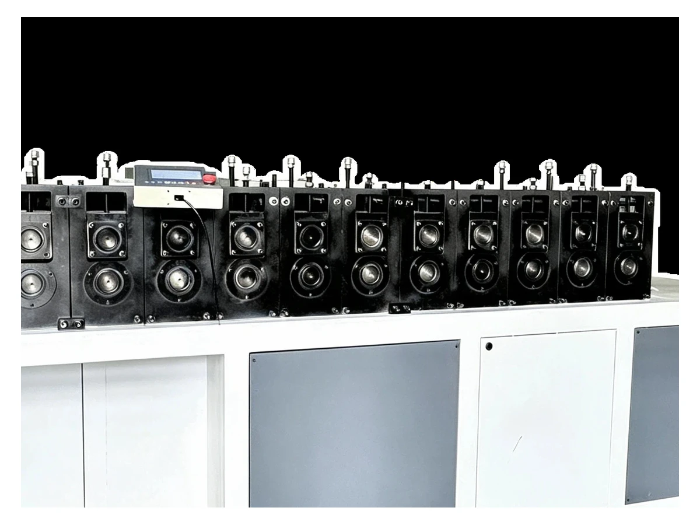
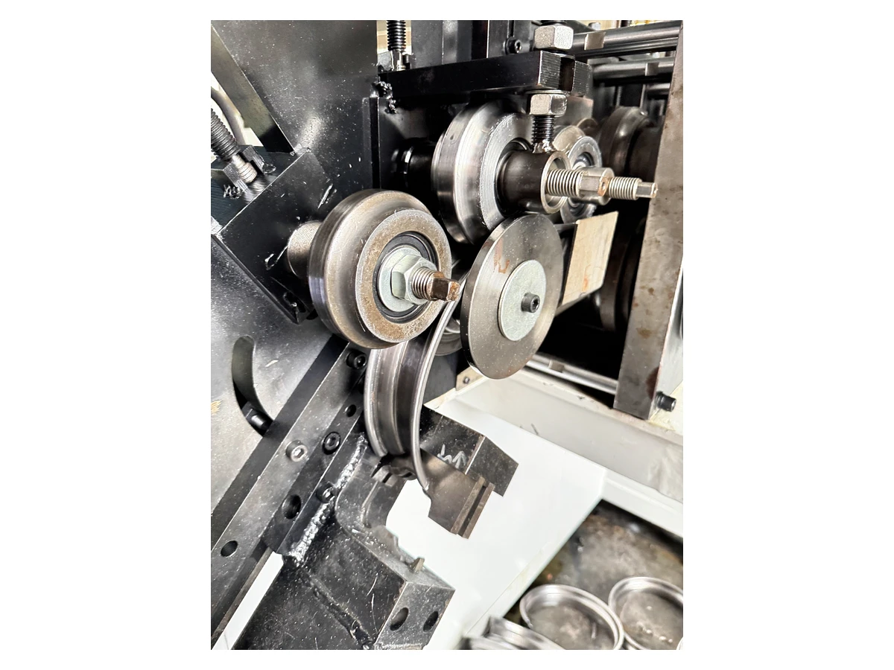
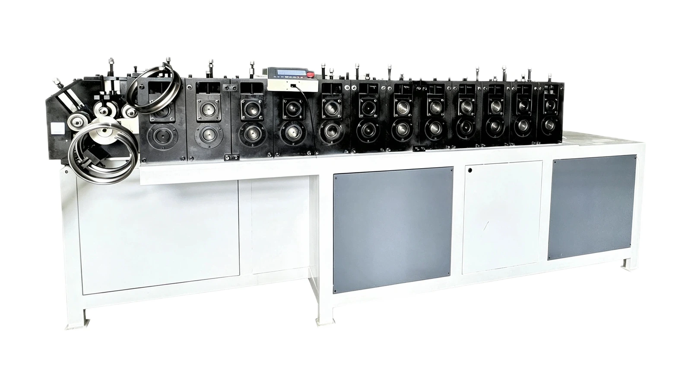
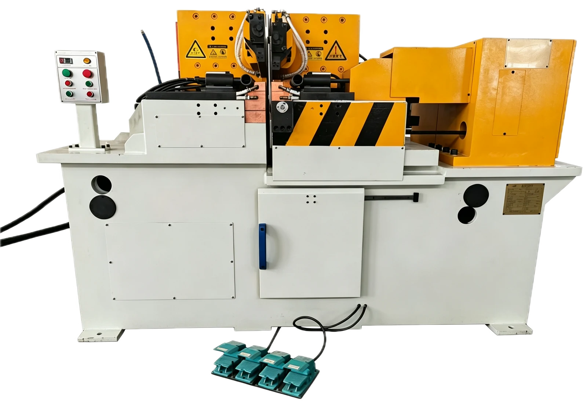

Machine in detail
Forming stations, the ring at the curving rolls, and the working station on the shop floor.



A dedicated roll forming line for bicycle and motorcycle wheel rims. Strip is fed through sixteen driven forming axes, curved round in three stages and cut to a closed ring — ring diameter held within ±0.5 mm, line speed up to 12 m/min, tooling set built to the buyer's rim sample.

What the line is built around: ring tolerance, forming capacity and the numbers the plant needs for the layout.
| Ring diameter tolerance | within ±0.5 mm on diameter |
| Ring size range | set per rim programme, formed to the buyer's sample |
| Forming axes | 16 shafts, upper and lower station pairs |
| Feed wheels | 32 — 16 upper, 16 lower |
| Curving rolls | 3 |
| Shaft width | 60 mm |
| Feed wheel thickness | 132–150 mm |
| Station transmission | Gear driven |
| Line speed | 12 m/min |
| Cut-off | Square cut, HSS cutter |
| Tooling material | 40Cr / SKD11, heat treated to HRC 55 and above |
| Control | PLC with touch panel, manual jog and automatic cycle |
| Main drive | 22 kW servo motor |
| Hydraulic unit | 11 kW, 100 kg tank, 46# anti-wear oil |
| Power supply | 440 V / 50 Hz (other voltages on request) |
| Overall dimensions | approx. 4,500 × 1,200 × 1,500 mm |
| Machine weight | approx. 2,000 kg |
* Specifications as supplied for this model. Final configuration confirmed on the proforma invoice.
The line runs in one direction from the strip stand to the cut-off. Each section is listed as supplied.
Decoiler, guide and entry rolls
| Strip stand | Steel strip decoiler supplied with the line, one coil stand per machine |
| Entry guide | Strip centred before the first forming pass so the ring stays square |
| Feed wheels | 32 wheels in matched upper and lower sets, 132–150 mm thick |
| Shaft width | 60 mm shafts carry the wheel sets across all stations |
Sixteen axes, gear driven
| Axes | Sixteen forming shafts, upper and lower pass pairs, mounted on a common frame |
| Curving rolls | Three curving rolls bring the formed section round into a ring |
| Drive | Gear transmission from the main servo motor to every station |
| Station setting | Each pair adjusted individually to build the rim profile from the sample |
| Line speed | 12 m/min maximum, set from the panel per ring size |
Square cut on HSS tooling
| Cutter | HSS white-steel blade, square cut across the formed section |
| Ring closure | Strip cut to developed length so the ends meet for the flash butt weld |
| Tooling | Forming rolls in 40Cr / SKD11, heat treated to HRC 55 and above |
| Change-over | Roll sets swapped per rim size; no rewiring or reprogramming of the drive |
PLC panel, manual jog for setting
| Control panel | PLC with touch screen, start / stop and station jog |
| Modes | Manual jog for setting the line, automatic cycle for production |
| Hydraulic unit | 11 kW pump unit, 100 kg tank, 46# anti-wear hydraulic oil |
| Safety | Emergency stop at the panel and at the forming end of the line |
Power, oil and floor space
| Power supply | 440 V / 50 Hz as supplied; other voltages on request |
| Installed drive power | 22 kW main servo plus 11 kW hydraulic |
| Floor area | Approx. 4,500 × 1,200 mm, straight line, level floor |
| Weight | Approx. 2,000 kg, forklift or pallet truck for unloading |
Forming stations, the ring at the curving rolls, and the working station on the shop floor.


Six points that decide whether a rim line is worth running.
Ring diameter is the number that decides whether the rim laces true. The line is set from a sample ring and holds ±0.5 mm through the run.
Sixteen forming shafts build the full rim section in a single pass, so the profile is formed once rather than corrected afterwards.
Strip runs at up to 12 m/min, which keeps a rim programme inside one shift instead of tying the line up for days.
Change-over is a roll set swap. The same machine covers several rim widths without a second line.
Every station can be jogged by hand while the first ring of a new size is set up, then switched to automatic.
40Cr / SKD11 rolls at HRC 55 and above, HSS cut-off blade — the parts that wear are the parts that can be replaced.
Where a rim roll forming line earns its place.
What the line needs on site, and what arrives with it.
| Power supply | 440 V / 50 Hz, three phase, as supplied |
| Installed power | 22 kW main drive plus 11 kW hydraulic unit |
| Hydraulic oil | 46# anti-wear hydraulic oil, 100 kg fill |
| Floor | Level concrete, approx. 4,500 × 1,200 mm clear for the line |
| Compressed air | Not required for forming or cut-off |
| Operators | One operator for production, one fitter for roll set change-over |
| Roll set | One set per rim size, built to the sample |
| Roll material | 40Cr / SKD11, HRC 55 and above |
| Cut-off blade | HSS white steel, square cut |
| Spare parts | Wearing parts quoted with the roll sets |
The questions that come up before a rim line is ordered.
Yes. The stations are set per rim programme, so the same machine forms narrow bicycle rims and wider motorcycle or e-bike rims — each size with its own roll set.
Tooling is built to the rim sample you send, and the line is set up on that sample at commissioning. Ring diameter is held within ±0.5 mm once set.
Low-carbon and alloy steel strip in the thickness your rim drawing calls for. Send the strip grade, width and thickness with the rim sample and the roll set is built around it.
No. It forms and cuts the ring; the ends are closed on a flash butt welder, which is the next machine in a rim line and can be quoted with it.
Typically two to three days on site with the roll set fitted and the first rings checked against the sample. Remote support is available for the first production run.
Twelve months on the machine, with wearing parts such as rolls and blades quoted separately as spares.
Yes. The electrical build is supplied to the destination voltage and frequency; the standard build is 440 V / 50 Hz.
Machines that complete a rim line.

Forms the rim section from strip for motorcycle and scooter wheels.

Closes the ring the forming line produces before spinning and truing.

Spins the spoke holes after the ring is welded and trued.
Send the rim drawing or a sample ring: we quote the line with the roll sets for your sizes and confirm the strip specification before the order.